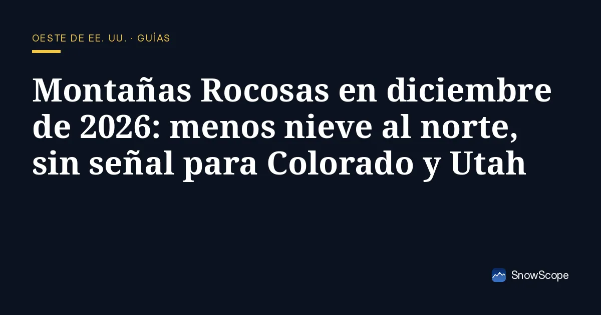
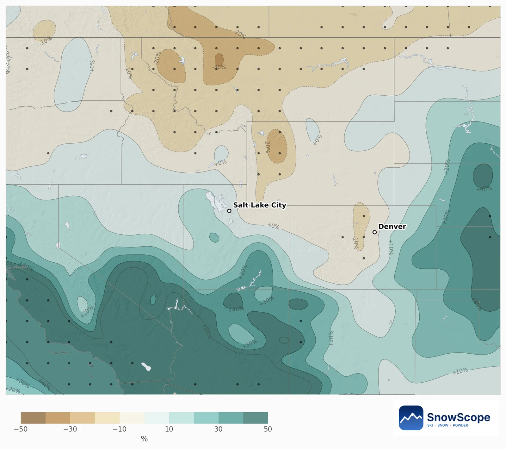
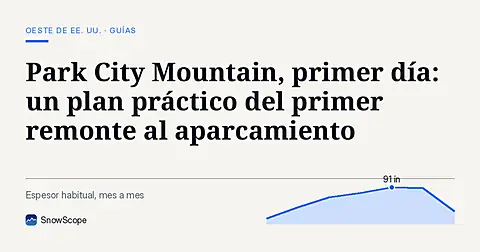
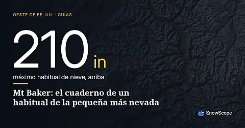

Montañas Rocosas en diciembre de 2026: menos nieve al norte, sin señal para Colorado y Utah
Se prevé que diciembre en las Montañas Rocosas sea aproximadamente 0,9 °C más cálido de lo habitual, con precipitaciones cerca de su promedio histórico. El panorama varía significativamente según la latitud: las cadenas del norte favorecen nieve escasa a principios de temporada, mientras que Colorado y Utah no muestran una tendencia clara en ninguna dirección.
Consulta la previsión de nieve en tiempo real de Rocky Mountains en la app SnowScopeEspesor de nieve, alertas de nieve polvo y mapa 3D, gratis.

Dónde se divide la señal
SnowScope compara cada zona montañosa con su propio registro de diciembres pasados. En las Rocosas, cuatro de cada cinco áreas—el 79 por ciento—no muestran tendencia hacia condiciones más nevadas o más escasas. Una quinta parte tiende a ser más escasa, casi toda en el norte desde la meseta de Yellowstone bajando por las cadenas cerca de Jackson y Big Sky. Solo un puñado de picos del sur de Utah insinúan nieve más abundante, apenas el 1 por ciento de la región.
Las probabilidades de nieve nueva por encima del promedio van del 27 por ciento en las partes más secas al 62 por ciento en las más húmedas, con un valor medio del 45 por ciento en toda la cadena.
Temperatura y humedad: la razón de la división
Cincuenta y uno pronósticos estacionales del centro meteorológico europeo coinciden en que diciembre será más cálido que el período de referencia (1993–2016). El calor no es uniforme: alcanza su máximo en las Rocosas Septentrionales con 1,7 °C, donde el 82 por ciento de las simulaciones muestran calentamiento y solo el 33 por ciento muestran anomalías húmedas. En Colorado la señal se debilita a 0,3 °C, y en Utah se sitúa en 1,0 °C. Mientras tanto, la precipitación se sitúa 3 por ciento por debajo de un promedio de diciembre de 40 mm en toda la cadena, con el conjunto casi dividido—45 por ciento más húmedo, 55 por ciento más seco.
Esta mezcla—calor modesto y precipitación cerca de lo normal o ligeramente seca—deja Colorado y Utah en un limbo estadístico. Las Rocosas Septentrionales, en cambio, se enfrentan a una configuración más cálida y ligeramente más seca que históricamente favorece mantos de nieve más delgados en diciembre.


Colorado: terreno neutral
Las estaciones de esquí de Colorado (Breckenridge, Vail, Winter Park, Beaver Creek, Steamboat, Copper Mountain) generalmente reciben 46 cm de nieve fresca en diciembre. Este pronóstico apunta a 46 cm—ligeramente por debajo, pero dentro del rango normal de variación. Solo el 42 por ciento de los diciembres pasados con condiciones similares fueron nevados. El panorama más amplio es la profundidad: el 31 de diciembre, Colorado suele tener 84 cm en el terreno; el pronóstico es 80 cm, casi idéntico.
Los diciembres pasados más parecidos a la configuración de este año fueron 1995, 1985 y 2003. Ninguno fue ni especialmente nevado ni especialmente escaso; fueron meses ordinarios. Eso es lo que sugiere el pronóstico ahora: planifica un diciembre típico y ajusta si las tormentas individuales resultan ser mayores o menores que el promedio estacional.
Wasatch de Utah: en línea con el promedio
El terreno más alto y húmedo de Utah (Park City, Deer Valley, Snowbird, Alta, Solitude) recibe 71 cm de nieve nueva en un diciembre normal. El pronóstico estacional nuevamente sugiere 70 cm—casi idéntico. La probabilidad de superar la media histórica es del 47 por ciento. El 31 de diciembre, Wasatch suele tener 103 cm en el terreno, y eso es lo que espera el pronóstico también.
Ninguna sorpresa a planificar: Utah parece estar preparado para un diciembre muy parecido a los últimos años. La variable principal será cuándo llegan las tormentas y qué altura alcanza la línea de nieve en los días cálidos.
Rocosas Septentrionales: principios escasos, luego observa
Las estaciones de esquí de Montana y Wyoming (Big Sky, Jackson Hole, Whitefish, Sun Valley, Bridger Bowl) enfrentan una relación de probabilidades de diciembre más escasa. El pronóstico apunta a 60 cm de nieve nueva—por debajo de los habituales 65 cm—y solo el 37 por ciento de probabilidad de superar la media de diciembre. La profundidad el 31 de diciembre se pronostica en 102 cm, igualando el promedio histórico. La escasez proviene del calor por encima del promedio y la humedad cerca del promedio: caerá nieve, pero habrá menos días lo suficientemente fríos para que se produzca.
Las laderas altas orientadas al norte tienen una ventaja al principio del mes, antes de que el deshielo o la consolidación del viento adelgace la base. A medida que avanza el mes, el pronóstico de 7 días importa más que el patrón mensual. Una o dos grandes tormentas del Pacífico pueden cambiar el total mensual, así que consulta el pronóstico de una semana antes de viajar en lugar de confiar en la perspectiva estacional.
Conclusión práctica
Los esquiadores de Colorado y Utah deben planificar un diciembre normal y reservar sin dudas. Las Rocosas Septentrionales justifican una pequeña protección: apunta a terreno alto en las primeras semanas y prepárate para seguir la última trayectoria de tormenta más adelante en el mes. Las tres regiones se beneficiarán de consultar el mapa de SnowScope siete días antes de viajar—muestra el tiempo exacto de la tormenta y la línea de nieve por elevación, detalles que un pronóstico mensual no puede capturar.
Consejos para esquiadores
- Colorado y Utah: trata esto como un diciembre estándar. Ninguna señal del pronóstico justifica cambiar tus planes.
- Rocosas Septentrionales: prioriza pistas altas orientadas al norte en principios de diciembre mientras la base está más fresca. Las laderas inferiores y los aspectos sur pueden adelgazarse más rápido de lo habitual.
- Observa el pronóstico de 7 días una semana antes de viajar.
- Usa el mapa diario de SnowScope para localizar la línea de nieve en cada estación y adaptar tus descensos en terreno pronunciado por encima de ella.
- Empaca capas y protector solar: diciembre más cálido significa más sol y deshielo más rápido en las laderas orientadas al sur, especialmente por la tarde.
Sobre estas cifras
Los espesores de nieve de las estaciones son la nieve más profunda en las pistas altas en la fecha indicada; son estimaciones para una zona, no una medida en un punto. Las previsiones pueden cambiar. Consulta siempre el boletín oficial de aludes antes de salir fuera de pista.
Citar este informe
Para investigación, docencia o prensa: cifras y gráficos reutilizables libremente bajo CC BY 4.0 con esta cita.
SnowScope (2026), Montañas Rocosas en diciembre de 2026: menos nieve al norte, sin señal para Colorado y Utah, https://snowscope.app/blog/es/2026/11/rocky-mountains-december-2026-snow-outlook.html, consultado el 2026-11-10
SnowScope (Atlas Labs). (2026, November 10). Montañas Rocosas en diciembre de 2026: menos nieve al norte, sin señal para Colorado y Utah. SnowScope snow reports. https://snowscope.app/blog/es/2026/11/rocky-mountains-december-2026-snow-outlook.html
BibTeX
@misc{snowscope2026rockymountainsdecember20,
author = {{SnowScope (Atlas Labs)}},
title = {Montañas Rocosas en diciembre de 2026: menos nieve al norte, sin señal para Colorado y Utah},
year = {2026},
month = nov,
howpublished = {\url{https://snowscope.app/blog/es/2026/11/rocky-mountains-december-2026-snow-outlook.html}},
note = {Published 2026-11-10 09:32 UTC; accessed 2026-11-10}
}· CC BY 4.0 · Métodos, datos y herramientas →
Sigue Rocky Mountains
Gratis: un aviso cuando llega la nieve y la previsión cada mañana.
Más partes de nieve

Cómo pasar el primer día en Park City Mountain, Utah, y cuándo ir: nuestro histórico da unas 71 in (180 cm) de pico habitual a media montaña en 46 inviernos pasados.

Mt Baker, Washington: unas 133 in (337 cm) de pico habitual a media montaña en 46 inviernos pasados, un récord mundial de nieve y ningún alojamiento a pie de pista.

Planifica Mammoth Mountain por temporada: unas 93 in (235 cm) de pico habitual a media montaña en 46 inviernos pasados, marzo el más nevado, primaveras largas e inviernos variables.